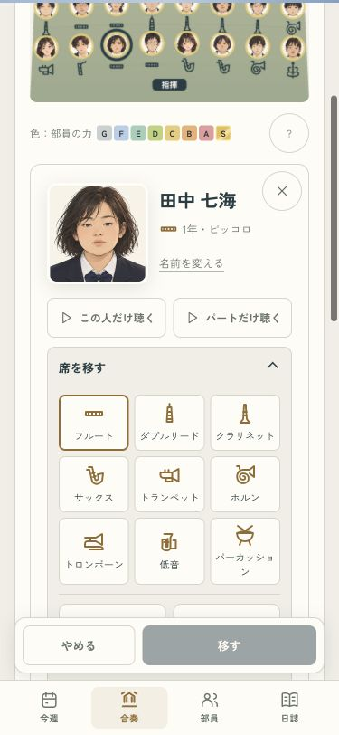
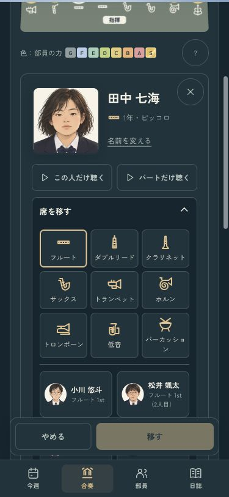
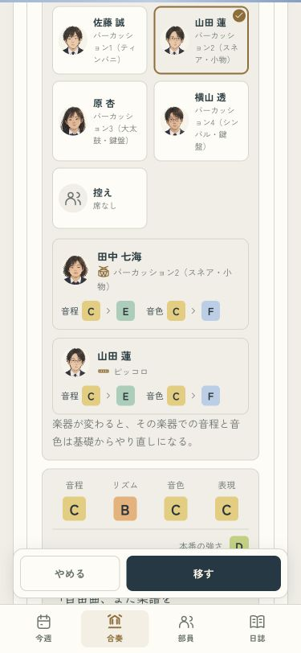
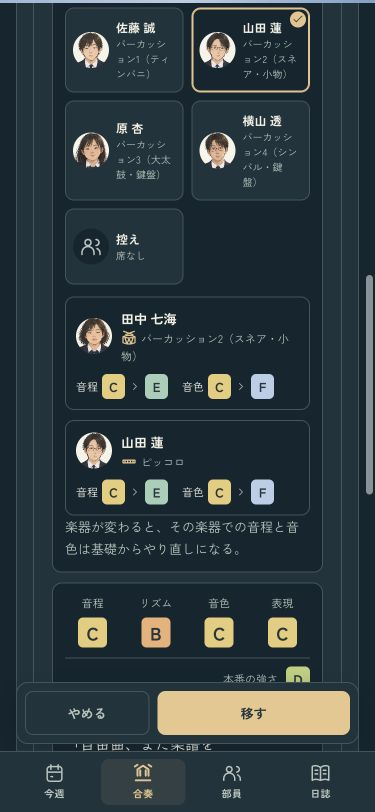
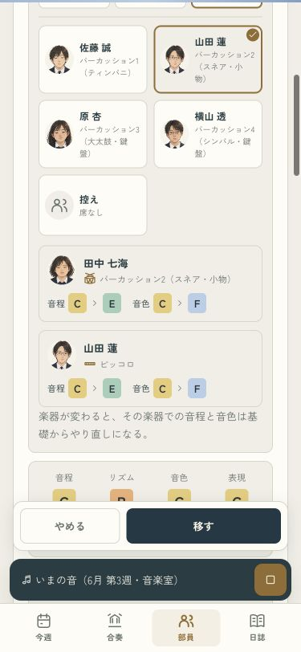
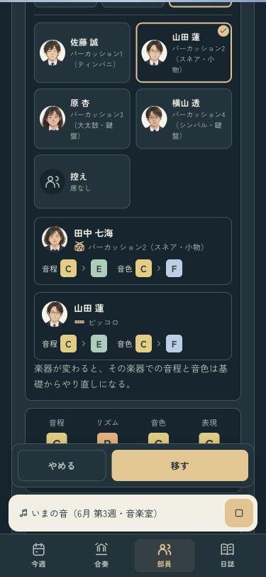

席を選ぶ、最後の一押しまで
楽器をアイコンから選び、移る二人の顔と力を見比べる。「やめる／移す」は画面下に置き、合奏・指揮ボタンと重ならないようにしました。
聴きながらでも停止できます。部員一覧の小さな再生バーがあるときは、その上に間隔を空けて表示します。
ライトで試す · ダークで試す · 確認記録
9種類の楽器から選ぶ・ライト
9種類の楽器から選ぶ・ダーク
移動前の力を見比べる・ライト
移動前の力を見比べる・ダーク
部員一覧で聴きながら・ライト
部員一覧で聴きながら・ダーク